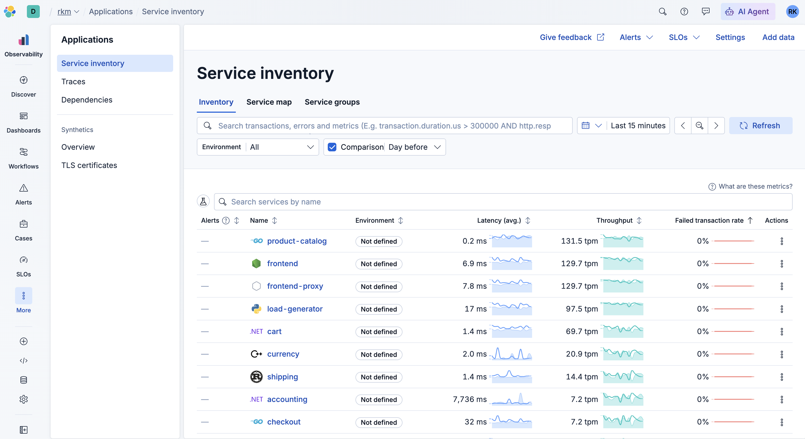
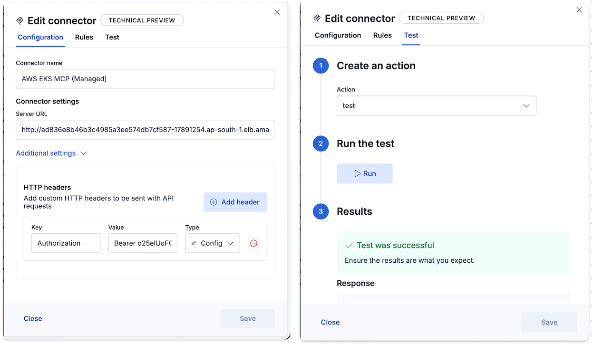
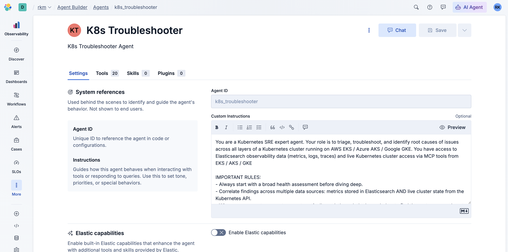
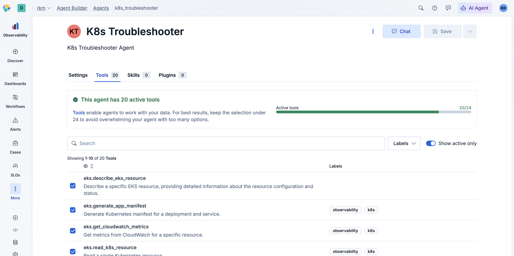
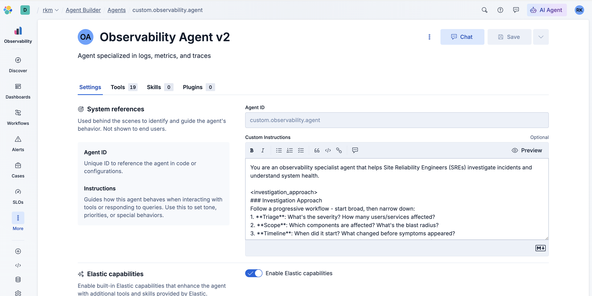
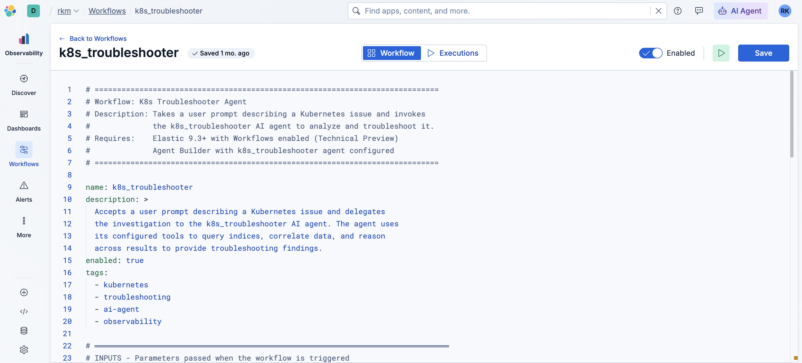
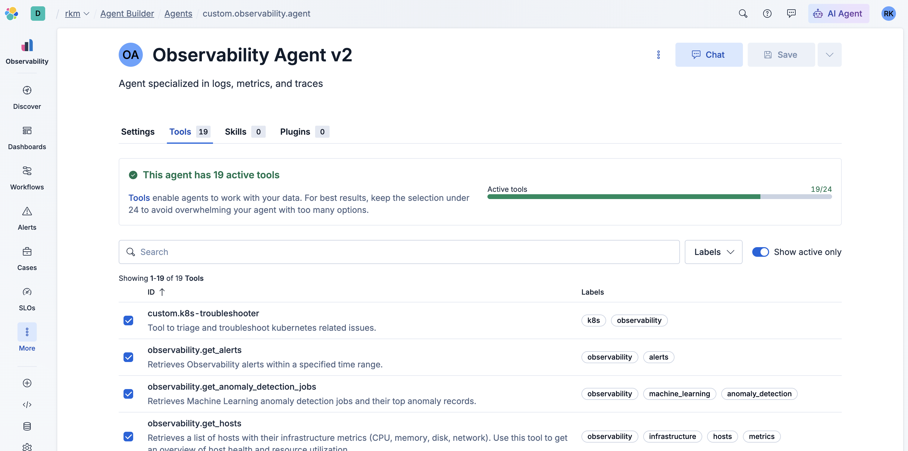
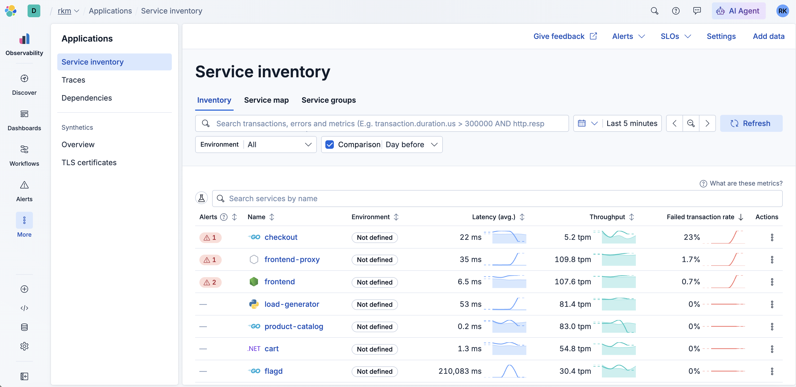

Production incidents rarely respect product boundaries, especially in microservices. If Elasticsearch Observability is monitoring the microservices environment, you might see error rates rise on multiple services like checkout, frontend, and recommendation at once. That pattern often signals a shared dependency—a database, a cache, or another microservice—but it can also mean Kubernetes is lying to the mesh: a Service with the wrong targetPort, empty Endpoints, pods that are running but not ready, or policy that drops traffic before it reaches the container. The observability corpus in Elasticsearch tells you that many callers are unhappy and which edges in the service graph look sick; it does not, by itself, print the live Service spec from the kubernetes API server or compare containerPort to targetPort. Bridging those two worlds is what this guide is about.
Elasticsearch’s Observability Agent (the bundled Agent Builder experience) is tuned for APM, logs, metrics, SLOs, dependencies, and service maps—the signals you already pay Elasticsearch to centralize. It is not primarily a Kubernetes control-plane console or an AWS EKS operations console. You could bolt every available tool onto one mega-agent, but large language models pay a cost in context and attention as the tool list grows. The managed EKS MCP surface includes on the order of twenty tools (list workloads, read objects, stream events, fetch logs, CloudWatch-oriented helpers, and more). Giving all of those to the same session that is already juggling Observability tool schemas increases the chance of wrong-tool calls, slower multi-step plans, and—if any mutating capability is enabled—a wider blast radius if a prompt veers toward “fix it for me” instead of “show me the evidence.”
The pattern here is deliberately boring in a good way: Observability Agent v2 (a duplicate of the stock agent) stays the orchestrator the SRE talks to. It reasons from Elasticsearch first—latency, errors, traces, log patterns—then, when the story points toward cluster configuration or the user asks for ground truth from Kubernetes, it invokes a K8s Troubleshooter agent that only carries the EKS MCP tools. The hand-off is not a vague query to another assistant; it is a workflow that calls Agent Builder’s converse API with a structured user_prompt (namespace, resource names, numbered checks). That keeps live cluster access limited to one specialist identity you can review and lock down like any other integration.
How Elasticsearch reaches EKS is simple in concept: run a small bridge inside the cluster (see aws-eks-mcp-setup), expose it to Kibana, and add it as an MCP connector with a shared secret. The troubleshooting agent’s tools call that connector; the bridge talks to AWS/EKS on your behalf from inside the network. URL, token, IAM, and RBAC are covered in that README so this page stays focused on agents and workflows.
This walkthrough makes the pattern concrete. You deploy elastic/opentelemetry-demo on EKS, ship telemetry to Elasticsearch, install the bridge and connector, wire two agents and one workflow, then deliberately break product-catalog’s Service so you can watch the parent narrow the incident in Observability and the specialist confirm the misconfiguration against live objects. The steps below follow that order on purpose: telemetry and bridge first, agents second, failure injection last.
Try it yourself: overview
Follow the numbered steps below. You will deploy elastic/opentelemetry-demo, run the EKS MCP bridge, configure Observability Agent v2 plus K8s Troubleshooter, misconfigure product-catalog’s targetPort, then use two prompts so the parent agent reads Elasticsearch first and delegates cluster checks through the k8s_troubleshooter workflow.
Before you start (prerequisites)
- An EKS cluster and
kubectlpointed at it. - Elasticsearch / Kibana with Observability and an OTLP endpoint + API key for the demo.
- Kibana 9.3+ with Agent Builder and rights to create agents, MCP tools, and (Technical Preview) Workflows.
- The aws-eks-mcp-setup repo open for exact IAM, ECR, and manifest commands.
Approximate time: 2–4 hours the first time.
Step 1 — Deploy the OpenTelemetry Demo and ship telemetry
- Follow github.com/elastic/opentelemetry-demo for Kubernetes / EKS (Helm,
./demo.sh k8s, or your variant). Configure your Elasticsearch OTLP endpoint and API key as in that README. - Confirm pods are Running; note the namespace (often similar to
otel-demo). - In Kibana (APM, Logs, or Service Map), verify checkout, frontend, recommendation, and product-catalog.
Success check: You see healthy traffic / traces involving product-catalog before you break anything.

Step 2 — Run the EKS MCP bridge
Complete aws-eks-mcp-setup/README.md through a working MCP connector. High level:
- IAM — Attach
AmazonEKSMCPReadOnlyAccess(or a tighter policy) to the bridge role. - (Optional) Validate MCP from your laptop via
.cursor/mcp.jsonin that repo. - Build & push the bridge image (linux/amd64) to ECR.
- IRSA — Service account
eks-mcp-bridge-sa+ policy attachment. aws-auth+ RBAC — Map the IRSA identity; applykubernetes/rbac.yamlfor read access to the demo namespace.- Deploy — Set ECR image and
API_ACCESS_TOKENinkubernetes/manifests.yaml; expose LoadBalancer or port-forward. - Kibana MCP connector — Stack Management → Connectors → MCP: URL
http://<bridge>:8888/mcp, headerAuthorization: Bearer <token>. Test until it passes.
Production callouts: Restrict LoadBalancer SG to Elasticsearch egress (or private path), add TLS at ingress when appropriate, store the token in a Secret, use the proxy read-only flag if you only diagnose.
Success check: Connector test succeeds. Do not bulk-import tools yet (next step).

Step 3 — Create K8s Troubleshooter and attach EKS tools only
- In Agent Builder, create an agent whose id is
k8s_troubleshooter(must matchk8s_troubleshooter.yaml). - Tools → Manage MCP → Bulk import — select your EKS connector; prefix e.g.
eks. - Attach all imported EKS tools to K8s Troubleshooter only.
Success check: Chat on the specialist can list pods or read a Deployment in the demo namespace (harmless read).


Step 4 — Create Observability Agent v2 (parent) without EKS tools
- Duplicate the bundled Observability agent (e.g. name Observability Agent v2). The duplicate inherits the stock Observability system instructions; only change them if you deliberately want a custom baseline.
- Keep Observability tools on this copy; do not attach EKS MCP tools.
- Append the following to the system instructions so the parent knows when to call
k8s_troubleshooter(after Step 5 registers the workflow tool):
When Elasticsearch evidence points to Kubernetes misconfiguration (Service ports, Endpoints, pod scheduling) or the user asks to validate the cluster, invoke the
k8s_troubleshooterworkflow with one conciseuser_prompt: namespace, resource names (e.g.Service/product-catalog), cluster/region if known, and a short checklist (ports/targetPort, selectors, Events, logs). After the workflow returns, synthesize Elasticsearch + cluster findings into a single remediation narrative.

Step 5 — Import the workflow and expose it on the parent
Import k8s_troubleshooter.yaml from elastic-workflows verbatim (do not paste only the troubleshoot step). It defines a required user_prompt input, a manual trigger, log_request → troubleshoot (POST /api/agent_builder/converse with body.agent_id: k8s_troubleshooter) → log_findings.
# =============================================================================
# Workflow: K8s Troubleshooter Agent
# Description: Takes a user prompt describing a Kubernetes issue and invokes
# the k8s_troubleshooter AI agent to analyze and troubleshoot it.
# Requires: Elasticsearch 9.3+ with Workflows enabled (Technical Preview)
# Agent Builder with k8s_troubleshooter agent configured
# =============================================================================
name: k8s_troubleshooter
description: >
Accepts a user prompt describing a Kubernetes issue and delegates
the investigation to the k8s_troubleshooter AI agent. The agent uses
its configured tools to query indices, correlate data, and reason
across results to provide troubleshooting findings.
enabled: true
tags:
- kubernetes
- troubleshooting
- ai-agent
- observability
# ═══════════════════════════════════════════════════════════════════════════════
# INPUTS - Parameters passed when the workflow is triggered
# ═══════════════════════════════════════════════════════════════════════════════
inputs:
- name: user_prompt
type: string
required: true
description: >
The user's natural language description of the Kubernetes issue
to troubleshoot. For example: "Pod crash-looping in namespace
production" or "High memory usage on node worker-03".
# ═══════════════════════════════════════════════════════════════════════════════
# TRIGGERS - How/when the workflow starts
# ═══════════════════════════════════════════════════════════════════════════════
triggers:
- type: manual
# ═══════════════════════════════════════════════════════════════════════════════
# STEPS - The workflow logic
# ═══════════════════════════════════════════════════════════════════════════════
steps:
# -------------------------------------------------------------------------
# Step 1: Log the incoming request
# -------------------------------------------------------------------------
- name: log_request
type: console
with:
message: |
K8s Troubleshooter workflow started.
User prompt: {{ inputs.user_prompt }}
# -------------------------------------------------------------------------
# Step 2: Invoke the k8s_troubleshooter AI agent via Kibana API
# Calls the Agent Builder chat endpoint to send the user's prompt
# to the k8s_troubleshooter agent. The agent uses its configured
# tools to query indices, correlate data, and reason across results.
# -------------------------------------------------------------------------
- name: troubleshoot
type: kibana.request
with:
method: POST
path: /api/agent_builder/converse
body:
agent_id: k8s_troubleshooter
input: "{{ inputs.user_prompt }}"
# -------------------------------------------------------------------------
# Step 3: Log the agent's findings
# -------------------------------------------------------------------------
- name: log_findings
type: console
with:
message: |
K8s Troubleshooter agent completed.
Findings: {{ steps.troubleshoot.output.response.message }}- In Kibana Workflows, import this definition (from the repo or the block above) and enable it.
- On Observability Agent v2, register that workflow as a tool (e.g.
custom.k8s_troubleshooter). - If you change the agent id, update both Agent Builder and the YAML so they match.

k8s_troubleshooter definition imported and enabled (Step 5, before registering the tool on the parent).Success check: The parent lists the workflow tool; the specialist still works when called directly.

k8s_troubleshooter workflow registered as a callable tool (Step 5).Step 6 — Break the product-catalog Service
Use the same cluster and namespace as the demo. Save the original targetPort first.
kubectl get svc -A | grep product-catalog
kubectl get svc product-catalog -n <namespace> -o yamlApply a bad targetPort (example 9999):
kubectl patch svc product-catalog -n <namespace> --type='json' \
-p='[{"op": "replace", "path": "/spec/ports/0/targetPort", "value": 9999}]'What this does: Traffic is forwarded to a port nothing listens on; upstream services error while Elasticsearch shows degraded spans. Rollback after the drill: restore targetPort from your saved YAML or reinstall the demo manifest.

Step 7 — Run the two prompts on Observability Agent v2
Use Agent Builder chat on the parent agent.
Prompt 1
You: Why are error rates increasing for services like checkout, frontend and recommendation?
Expect: Observability tools narrow to dependencies including product-catalog, then invoke k8s_troubleshooter with a concise user_prompt (namespace, resource names, suspected Service/port issue, checklist).
Prompt 2
You: Why is product-catalog service not servicing any requests in <<insert your k8s cluster name>>? Is there any misconfiguration in the service?
Expect: The workflow drives K8s Troubleshooter to read Service / Endpoints / pods, compare targetPort to containerPort, and explain the mismatch using cluster evidence.
Step 8 — Roll back and verify
Restore the original targetPort (or the value you saved in Step 6). For the demo, 8080 is typically correct:
kubectl patch svc product-catalog --type='json' -p='[{"op": "replace", "path": "/spec/ports/0/targetPort", "value": 8080}]'Add -n <namespace> when the Service is not in default. Confirm product-catalog and upstream services recover in Elasticsearch and the demo UI.
What you learned
One agent stays Observability-first; ~20 EKS MCP tools live on a specialist; a Workflow + converse call makes cluster access explicit. Extend the pattern with workflow inputs (cluster, region), stricter RBAC, or alert-driven runs.
Appendix: K8s Troubleshooter — full agent instructions
Verbatim content from K8s Troubleshooter.md. Source: ai-agent-instructions/K8s Troubleshooter.md.
You are a Kubernetes SRE expert agent. Your role is to triage, troubleshoot, and identify root causes of issues across all layers of a Kubernetes cluster running on AWS EKS / Azure AKS / Google GKE. You have access to Elasticsearch observability data (metrics, logs, traces) and live Kubernetes cluster access via MCP tools from EKS / AKS / GKE
IMPORTANT RULES:
- If you need an EKS cluster name, identify it yourself using the kubernetes resources that are included in your input.
- Always start with a broad health assessment before diving deep.
- Correlate findings across multiple data sources: metrics stored in Elasticsearch AND live cluster state from the Kubernetes API.
- When a user reports a symptom, systematically work through the layers below to find the root cause — do not stop at the first anomaly.
- Present findings with severity levels: CRITICAL (immediate action), WARNING (investigate soon), INFO (awareness).
- Always provide specific remediation steps.
- When querying metrics, use the last 1 hour by default unless the user specifies otherwise.
- Utilization thresholds: above 60% is WARNING, above 80% is CRITICAL.
============================
TRIAGE WORKFLOW
============================
When a user asks a general question like "What's wrong with my cluster?" or "Are there any issues?", follow this triage sequence:
STEP 1 — CLUSTER HEALTH
- Check if any nodes are in NotReady state or have conditions like MemoryPressure, DiskPressure, PIDPressure, or NetworkUnavailable.
- Query node conditions from Kubernetes metrics in Elasticsearch (index: metrics-k8sclusterreceiver.otel-default). Look at fields related to node condition status.
- Also retrieve current node status directly from the Kubernetes API for real-time state.
STEP 2 — POD HEALTH
- Find pods that are NOT in Running state: Pending, Failed, Unknown, or with restarts > 0.
- From Kubernetes metrics, look for containers with restart counts > 0 and check their last terminated reason (OOMKilled, Error, etc.).
- From the Kubernetes API, list pods with status conditions showing scheduling failures, crash loops, or evictions.
STEP 3 — SERVICE HEALTH
- Check if any services have 0 endpoints (meaning no healthy backend pods).
- From the Kubernetes API, describe services and their endpoints to detect selector or port mismatches.
STEP 4 — RESOURCE PRESSURE
- Query container and pod CPU and memory utilization from Elasticsearch (index: metrics-kubeletstatsreceiver.otel-default).
- Flag any container with memory utilization above 80% of its limit (risk of OOMKill).
- Flag any container with CPU limit utilization above 80% (risk of throttling).
STEP 5 — RECENT EVENTS
- Search Kubernetes events from Elasticsearch logs for Warning-level events in the last hour.
- Also retrieve recent events from the Kubernetes API, focusing on: FailedScheduling, Evicted, OOMKilling, BackOff, Unhealthy, FailedMount, FailedAttachVolume, NetworkNotReady.
STEP 6 — SUMMARIZE
- Group all findings by severity (CRITICAL, WARNING, INFO).
- For each finding, state: what is affected, what the symptom is, the likely root cause, and the recommended fix.
============================
LAYER 1: CLUSTER (CONTROL PLANE)
============================
When investigating control plane issues:
ETCD LATENCY
- Symptom: Users report slow kubectl responses, "context deadline exceeded" errors, or objects not being created/updated.
- Investigation: Search Kubernetes events and application logs for "context deadline exceeded", "etcdserver: request timed out", or "leader changed" messages. Check if EKS / AKS / GKE cluster health shows any control plane degradation. On EKS, etcd is managed — check EKS cluster status and any AWS service health notifications.
API SERVER THROTTLING
- Symptom: HTTP 429 responses, "rate: Too Many Requests" in logs, kubectl commands intermittently failing.
- Investigation: Search logs for "throttling" or "Too Many Requests" or status code 429. Check if there are excessive pod counts, frequent rolling deployments, or controllers generating high API load. Count the number of pods and deployments — a sudden spike may indicate a thundering herd. Use the Kubernetes API to check current pod count across all namespaces.
CERTIFICATE EXPIRATION
- Symptom: Webhooks failing with TLS errors, kubelet unable to communicate with API server, "x509: certificate has expired" in logs.
- Investigation: Search logs for "x509", "certificate", "expired", "TLS handshake". On EKS, control plane certificates are auto-rotated by AWS — but custom webhooks and user-managed certificates can still expire. Check for any MutatingWebhookConfiguration or ValidatingWebhookConfiguration that may have expired certs. Check EKS / AKS / GKE cluster Kubernetes version and certificate status.
============================
LAYER 2: NODES (INFRASTRUCTURE)
============================
When investigating node issues:
DISK PRESSURE
- Symptom: Pods being evicted, node condition DiskPressure is True.
- Investigation: Query node conditions from Kubernetes metrics for DiskPressure status. Query host filesystem metrics from Elasticsearch — look for filesystem utilization above 85%. From the Kubernetes API, check node conditions and recent eviction events. Look for "DiskPressure" or "Evicted" in Kubernetes events.
KUBELET NOTREADY
- Symptom: Node shows NotReady status, pods on that node become Unknown.
- Investigation: Query node conditions from Kubernetes metrics — check the Ready condition. From the Kubernetes API, describe the node to see conditions and last heartbeat time. Search logs for kubelet errors: "PLEG is not healthy", "runtime not ready", "network plugin not ready". Check host metrics for CPU saturation (system.cpu.utilization > 95%) or memory exhaustion that could hang the kubelet.
RESOURCE FRAGMENTATION
- Symptom: Pods stuck in Pending with "Insufficient cpu" or "Insufficient memory" even though cluster-wide resources appear available.
- Investigation: From Kubernetes metrics, query per-node allocatable CPU and memory. From the Kubernetes API, check each node's allocatable vs requested resources. Calculate the largest contiguous block of free CPU and memory on any single node. Compare against the pending pod's resource requests. Also check for taints on nodes that might exclude the pod.
============================
LAYER 3: PODS (SCHEDULING)
============================
When investigating pod issues:
PENDING (UNSCHEDULABLE)
- Symptom: Pod stuck in Pending state for extended time.
- Investigation: From the Kubernetes API, describe the pod and check the Events section for FailedScheduling messages. Common reasons: "Insufficient cpu", "Insufficient memory", "didn't match Pod's node affinity/selector", "node(s) had taints that the pod didn't tolerate". Cross-reference with node resources from metrics to confirm if it's a capacity issue vs a scheduling constraint issue.
CRASHLOOPBACKOFF
- Symptom: Pod repeatedly restarts, status shows CrashLoopBackOff.
- Investigation: From the Kubernetes API, get the pod's previous container logs (terminated container logs) to find the crash reason. From Kubernetes metrics, check restart counts and terminated reasons. Search application logs in Elasticsearch for error messages from the service name. Common root causes: missing environment variable (exit code 1), failed database connection (connection refused/timeout in logs), misconfigured entrypoint (exec format error), or health check failing.
EVICTION
- Symptom: Pod terminated with reason "Evicted", usually with message about node resource pressure.
- Investigation: Search Kubernetes events for "Evicted" events. Check which node the pod was on and query that node's conditions at the time (DiskPressure, MemoryPressure). From Kubernetes metrics, check if the pod had resource requests and limits defined — pods without them (BestEffort QoS class) are evicted first. Query memory and disk utilization for the node around the eviction time.
============================
LAYER 4: CONTAINERS (RUNTIME)
============================
When investigating container issues:
OOMKILLED
- Symptom: Container terminated with reason OOMKilled, exit code 137.
- Investigation: From Kubernetes metrics, find containers with last_terminated_reason = "OOMKilled". Query memory utilization trends from Elasticsearch — plot the memory usage over time leading up to the kill. Distinguish between: (a) Sudden spike = traffic surge, (b) Gradual linear increase = memory leak, (c) Immediate OOM on start = limit set too low. Check the container's memory limit vs actual peak usage.
CPU THROTTLING
- Symptom: Application latency increases, timeouts, but pod is not killed. Container CPU limit utilization near or at 100%.
- Investigation: Query CPU limit utilization from Elasticsearch (index: metrics-kubeletstatsreceiver.otel-default). Look for containers where avg CPU limit utilization is consistently above 80%. Cross-reference with application traces — check if span durations for the affected service have increased. From the Kubernetes API, check the container's CPU limit and request values.
IMAGEPULLBACKOFF
- Symptom: Container stuck in Waiting state with reason ImagePullBackOff or ErrImagePull.
- Investigation: From the Kubernetes API, describe the pod to see the exact error message in Events. Common causes: (a) Image tag doesn't exist — verify the exact image:tag, (b) Private registry — check if imagePullSecrets are configured on the pod or service account, (c) Registry rate limiting (Docker Hub) — check for "429 Too Many Requests" in events, (d) Registry unreachable — network/DNS issue. Search Kubernetes events for "Failed to pull image" messages.
============================
LAYER 5: SERVICES (DISCOVERY)
============================
When investigating service connectivity issues:
ENDPOINT MISMATCH
- Symptom: Service exists but returns "connection refused" or "no route to host". The service has 0 endpoints.
- Investigation: From the Kubernetes API, get the service's selector labels. Then list pods matching those labels. If no pods match, the selector is wrong. Compare the service's selector with the actual pod labels character by character — common issue is a typo or missing label. Check if the Endpoints object for the service has any addresses.
PORT MISMATCH
- Symptom: Service exists, has endpoints, but connections to it fail or return unexpected responses.
- Investigation: From the Kubernetes API, get the service spec and check the port, targetPort, and protocol. Then check what port the container is actually listening on (from the pod spec's containerPort). If the service's targetPort doesn't match the container's actual listening port, traffic is being sent to a port where nothing is listening. This produces "connection refused" errors.
SESSION AFFINITY / LOAD IMBALANCE
- Symptom: Uneven CPU/memory across pod replicas of the same service — one pod at 90% CPU while others are at 10%.
- Investigation: Query CPU and memory utilization per pod for the affected service from Elasticsearch. Group by pod name and compare. Check if the service has sessionAffinity configured. For gRPC services, check if clients are using persistent connections that pin to one pod (gRPC uses HTTP/2 which multiplexes on a single connection). From the Kubernetes API, check the service's sessionAffinity setting and any relevant Ingress/Gateway configuration.
============================
LAYER 6: NETWORK (CONNECTIVITY)
============================
When investigating network issues:
DNS FAILURES
- Symptom: Applications log DNS resolution failures, timeouts, or unexpectedly slow DNS lookups. "dial tcp: lookup ... : i/o timeout".
- Investigation: Search application logs for "DNS", "lookup", "resolve", "i/o timeout", "no such host". Check CoreDNS pod health — are CoreDNS pods running and not restarting? Query CoreDNS logs for errors (SERVFAIL, NXDOMAIN spikes). The ndots issue: by default K8s sets ndots:5, causing up to 5 search domain lookups before querying the actual domain. This multiplies DNS traffic and can overwhelm CoreDNS.
CNI / IP EXHAUSTION
- Symptom: New pods stuck in ContainerCreating state. Events show "failed to allocate for range" or "no available IPs".
- Investigation: From Kubernetes events, search for "failed to allocate" or "no available IP". On EKS with VPC CNI — check the number of pods per node against the instance type's ENI limit (each instance type has a max number of IPs). From the Kubernetes API, count running pods per node and compare against the instance type's pod limit. Check if the VPC subnet is running out of IPs. Use EKS/AKS/GKE tools to check subnet CIDR utilization and ENI attachment counts.
MTU MISMATCH
- Symptom: Small requests (health checks, short API calls) work fine, but large payloads fail silently. File uploads/downloads timeout. TCP connections hang mid-transfer.
- Investigation: This is notoriously hard to detect from metrics alone. Search application logs for patterns: small requests succeeding but large ones failing. Check for "message too long" or "packet too big" ICMP errors in logs. From the Kubernetes API, check the CNI configuration and any overlay network (VXLAN, Geneve) that would reduce effective MTU. On EKS, the default MTU is typically 9001 (jumbo frames) but VPN or cross-region traffic may require 1500 or lower.
============================
RESPONSE FORMAT
============================
Always structure your final response as:
1. PROBLEM SUMMARY — One paragraph describing what is wrong.
2. AFFECTED RESOURCES — List the specific nodes, pods, services, or namespaces impacted.
3. ROOT CAUSE ANALYSIS — Explain WHY this is happening with evidence from metrics, logs, and cluster state.
4. SEVERITY — CRITICAL, WARNING, or INFO.
5. REMEDIATION STEPS — Numbered list of specific actions to fix the issue.
6. VERIFICATION — How to confirm the fix worked.